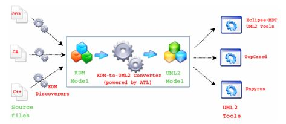
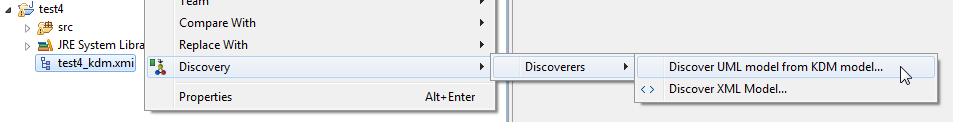
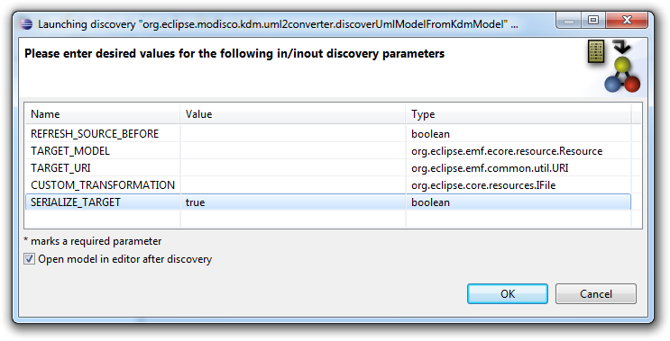
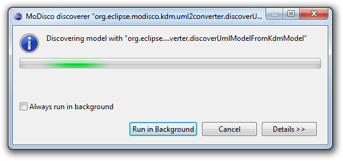
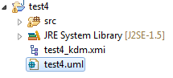
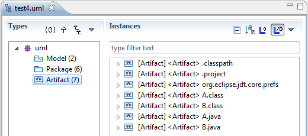
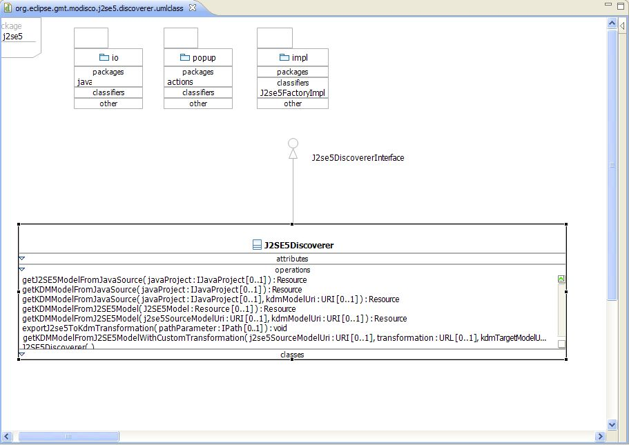

The goal of the KDM to UML converter plug-in is to allow practical transformations of KDM models to UML models.
Quality disclaimer: this discoverer is provided without any guarantee: it was only tested on a small number of projects of relatively small sizes. It may not be suitable for production environments.
This tool aims at converting KDM models into UML models in order to allow integrating KDM-compliant tools (i.e. discoverers) with UML-compliant tools (e.g. modelers, model transformation tools, code generators, etc), as shown in the next figure.

The converter is mainly implemented by an ATL model-to-model transformation taking as input a model conforming to the KDM meta model and producing as output a model conforming to the UML meta model.
The mapping between KDM and UML is described in the following table:
| +KDM to UML mapping | |
| KDM | UML |
|---|---|
| LanguageUnit | Package |
| CodeModel | Model |
| CodeAssembly | Model |
| Package | Package |
| ClassUnit | Class |
| InterfaceUnit | Interface |
| MethodUnit | Operation |
| ParameterUnit | Parameter |
| Extends, Implements | Generalization |
| PrimitiveType | PrimitiveType |
| MemberUnit | Property, Association |
This mapping can be changed or completed easily by updating the ATL rules.
The converter can also generate a trace file of the transformation to UML and a transformation log.
Right-click on a KDM model file (ending in "_kdm.xmi") and choose Discovery > Discoverers > Discover UML model from KDM model... to create the UML model from the KDM model:

A discovery parameters dialog opens to let you specify the parameters of the discovery:

Once launched, a progress dialog will appear as soon as the operation begins. Depending on the size of your application, the reverse engineering process might take some time to complete:

At the end of the process, the newly created model file is added to the root of your project if you set SERIALIZE_TARGET to true:

And the model is opened in the default model browser if you selected Open model in editor after discovery:

This UML model can be displayed in any modeler (you can use Papyrus for example). For most modelers, you would usually create a UML class diagram and then drag and drop model elements to the diagram.

The bidirectional UML Association elements are not identified by the rules: two complementary unidirectional UML Association elements are generated.